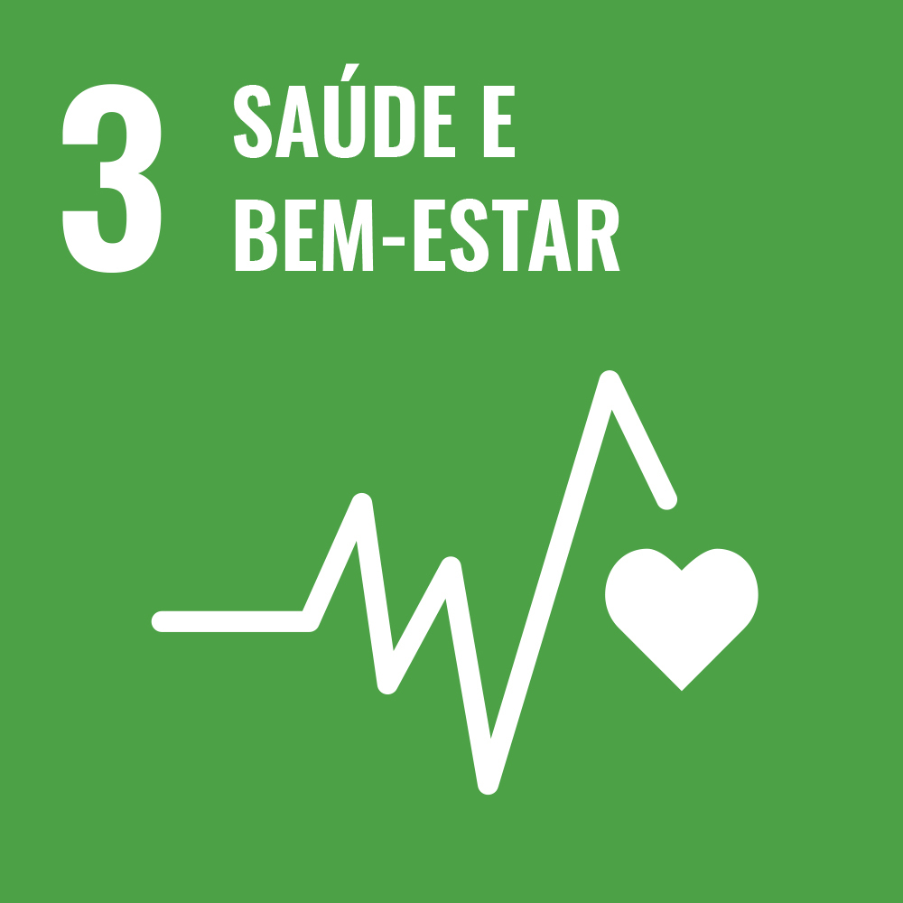

Objetivo do Desenvolvimento Sustentável
Meta 3.b: Apoiar a pesquisa e o desenvolvimento de vacinas e medicamentos para as doenças transmissíveis e não transmissíveis, que afetam principalmente os países em desenvolvimento, proporcionar o acesso a medicamentos e vacinas essenciais a preços acessíveis, de acordo com a Declaração de Doha, que afirma o direito dos países em desenvolvimento de utilizarem plenamente as disposições do acordo TRIPS sobre flexibilidades para proteger a saúde pública e, em particular, proporcionar o acesso a medicamentos para todos
Referências:
Problema:
Como preservar a bio diversidade utilizando ervas medicinais para o tratamento de doenças
Soluções Existentes:
Estou a pensar
Objetivo do Projeto:
Site com informações sobre ervas medicinais para o tratamento de doenças
 Volte para o index pessoal
Volte para o index pessoal